One of the inference methods in LIMIDs
Policies and strategies
A pure policy for decision node d prescribes an alternative in the set of all possible values for each possible configuration of its parents pa(d).The designation for a node d policy is 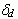. To allow for possible randomization we consider more general policies represented by functions on the set of all possible values of node d and set of all possible configurations of it’s parents pa(d) Cartesian product. This function represent a probability distribution over alternative choices of d for each possible configuration of pa(d).
A strategy for a LIMID is a set of policies for each decision node. A pure strategy is a set of pure policies. If a strategy is not pure it is called random.
A global maximum strategy Q is a strategy which satisfies E(U(Q)) >= E(U(q)) for all strategies q.
If our main goal is to maximize the mathematical expectation of the income, we have to find a strategy which satisfies E(U(Q)) >= E(U(q)) for all strategies q.
Local maximum strategy and income expectation
For each strategy 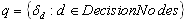 and any decision node d0 we will define  . Now let 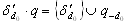 (we simply changed policy 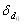 to policy 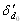)
. Now let 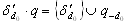 (we simply changed policy 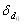 to policy 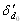)
A local maximum policy for a strategy q at d decision node is a policy 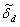 which satisfies
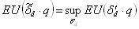
A strategy 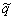 is said to be a local maximum strategy if all its policies are local maximum policies, i.e. if for all decision nodes d and all policies we have 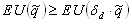.
Single policy updating
This subsection describes an iterative procedure for improving strategies within LIMIDs termed Single Policy Updating (SPU). From an initial strategy q0 it updates each policy in some order.
Assume that the current strategy is ql and that the policy for d0 is to be updated. Then the next strategy ql+1 only differs from ql on the policy for d0 and it is generated by finding a local maximum policy 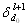 for ql and d0 at and letting 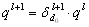.
When all the policies have been updated once we say that one cycle has been performed. The algorithm stops if the expected utility of strategies generated in two successive cycles is unaltered.
A few comments are in place here:
- The initial strategy q0 may be random and it is typically advantageous to choose it as such
- There is always a pure local maximum policy , however it may not be unique.
If we always choose a pure local maximum policy in each step, the algorithm eventually reaches a local maximum strategy at which no progress is made. This holds because there is only a finite number of pure strategies and the expected utility increases at each cycle. These observations are stated formally below.
Iterative improvement SPU is an iterative improvement algorithm: after each cycle, the expected utility of the current strategy has increased or is unaltered. In the latter case, the algorithm has reached a local maximum strategy.
Convergence SPU converges to a local maximum strategy if we always choose a pure policy in each updating step. In this case the algorithm converges in a finite number of cycles.
We shall later discuss how to choose initial strategies, updating sequences, and give conditions ensuring local maximum strategies to be global maximum strategies.
Potentials and their operations
In our local computation algorithms we represent the quantitative elements of a LIMID through entities called potentials. Each such potential has two parts as detailed below.
Let W be a subset of chance and decision nodes. Then a Potential on W is a pair 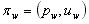 of real-valued functions on the set of all values of nodes from set W, and pw is non-negative.
The first part pw of the potential is called the probability part, and the second part uw is called the utility part. We call the probability part vacuous if it is equal to unity, and the utility part is vacuous if it is identically equal to zero.
We identity two potentials 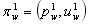 and 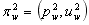 on W and write 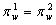 if 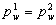 and 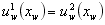 whenever 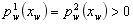, i.e. two potentials are considered equal if they have identical probability parts and their utility parts agree almost surely with respect to the probability parts.
Let 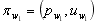 and 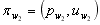 be two potentials on W1 and W2 respectively. The combination 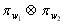 of 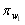 and 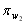 is the potential on 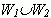 given by
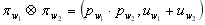
Let be a potential on W, and let  . The marginalization 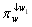 of 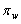 onto W1 is the potential on W1 given by
. The marginalization 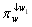 of 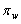 onto W1 is the potential on W1 given by
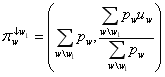
The division operation in the utility part is necessary to preserve expected utilities. The convention 0/0=0 has been used here and throughout.
Inference engine based on Junction tree
As mentioned, our algorithm proceeds by message passing in a suitable computational structure known as a junction tree. In the present subsection we describe how to construct this junction tree.
As for similar local computation algorithms the construction involves first a moralization process, in which an undirected graph is constructed, then a triangulation, where additional edges are added, and finally the organization of the cliques of the triangulated graph into a junction tree.
The transformation from the LIMID L to an undirected graph is made by first adding undirected edges between all nodes with a common child (including children that are value nodes). As value nodes do not have children, only edges between chance or decision nodes are added. Then we drop the directions on all arcs and finally remove all value nodes. The resulting ‘moral’ graph is denoted by Lm.
Next, edges are added to the undirected graph Lm to form a triangulated graph 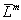. The moral graph is triangulated so no additional edges are needed.
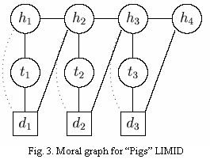
After the moralization, we have to delete all utility nodes from graph.
Finally the cliques C of are organized into a junction tree T having the property that for any node from the set of chance and division nodes, the collection of all cliques containing this node correspond to a connected subtree of T.
Steps of algorithm
Initialization
Suppose we are given a LIMID L and the initial strategy . To initialize the junction tree T one first associates a vacuous potential to each clique 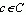. Then for each chance node r in L, pr is multiplied onto the probability part of the potential of an arbitrary clique containing fa(r). When this has been done, one takes each value node u and adds Uu to the utility part of the potential of any clique containing pa(u).
Let 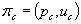 be the potential on clique C after these operations have been performed. The joint potential is equal to the combination of all the clique potentials and satisfies
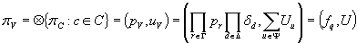
where à - set of chance nodes, 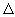 - set of decision nodes, 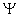 - set of utility nodes.
Collect propagation
Let 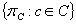 be a collection of potentials on the junction tree T. Let 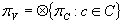 and suppose we wish to find the marginal  for some clique 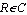.
for some clique 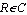.
To achieve our purpose we direct all the edges in T towards the ‘root-clique’ 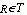. Then each clique passes a message to its child after having received messages from all its other neighbours. The structure of a message 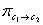 from clique C1 to its neighbor C2 is given by
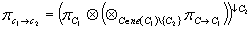
Local optimization
Let be a potential. The contraction of is given as 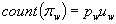.
Theorem: For a potential on W and we have
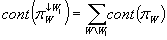
Corollary: Let the joint potential 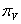 on the junction tree be given by
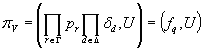
where is a strategy. Then the expected utility of q is 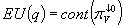
So, a local maximum policy for strategy q at d can be found by carrying out the following steps:
- Retract: Retract the policy for d from the potential on R to obtain
 .
. - Collect: Collect to R to obtain 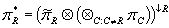.
- Marginalize: Compute
 .
. - Contract: Compute the contraction cfa(d) of 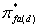.
- Optimize: For each 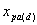, find a point 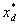 satisfying and define as the distribution degenerate at . Add to the potential on R to get .